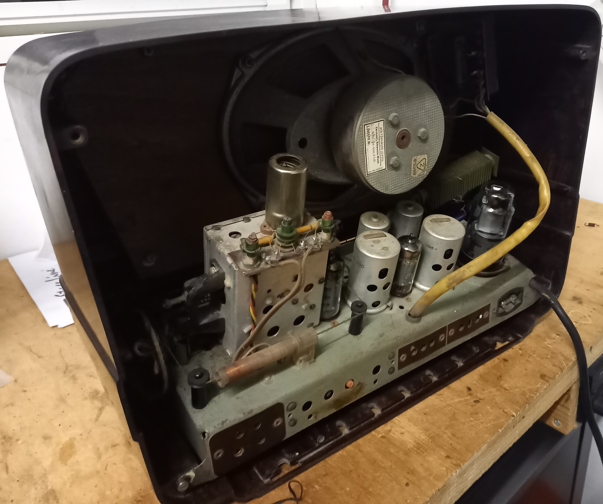
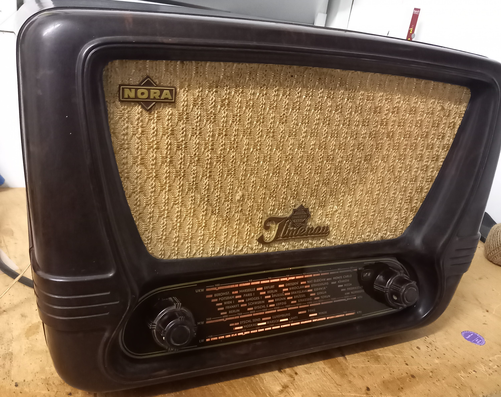
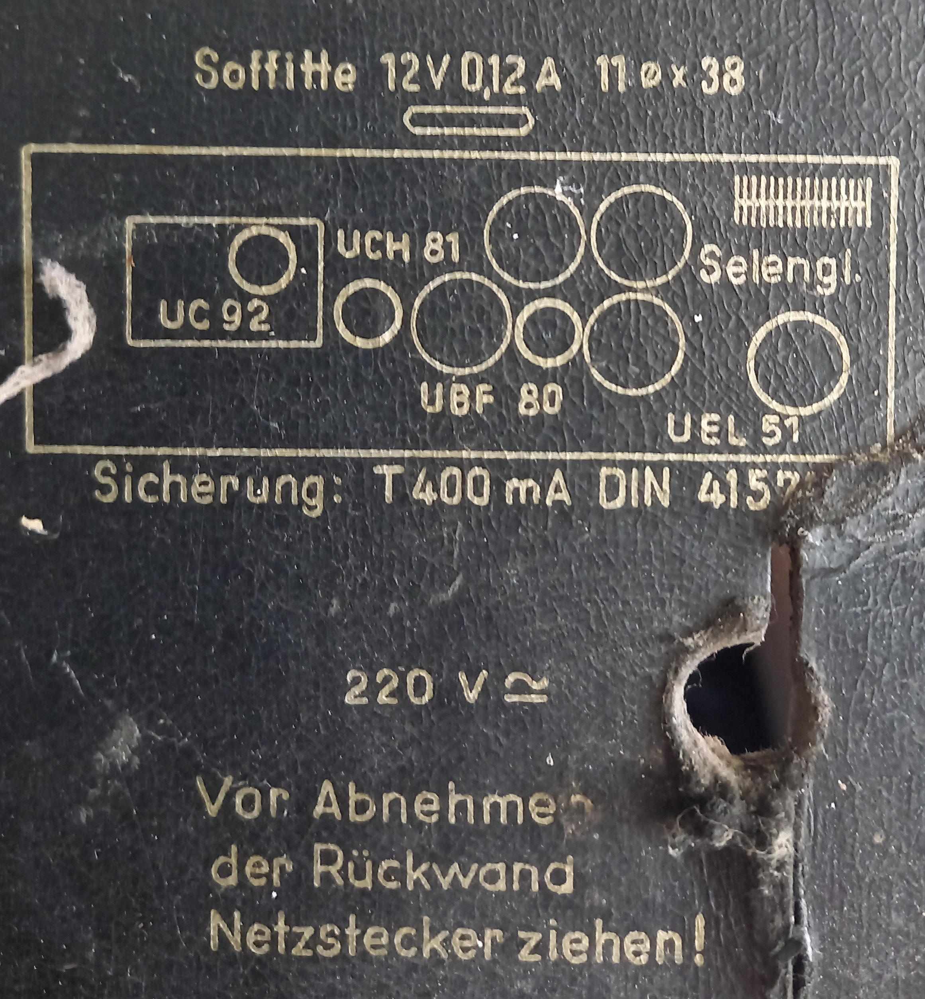

Auf dieser Seite seht ihr Sachen die ich Repariert oder Restauriert habe.
Als erstes also vor dem Einschalten die Rückwand abgenommen und geguckt was mich erwartet. Auf den ersten Blick sah alles soweit gut aus. Also mal den Stecker in die Steckdose und einschalten...
Leider ist dann nichts weiter passiert. Also erstmal Sicherung geprüft, war in ordnung. Dann habe ich die Skalenlampe die ja im Heizkreis liegt überprüft, aber die war auch ordnung. Nun also die Heizungen der einzelnen Röhren überprüfen. Dabei habe ich festgestellt das die UEL51 bei der Heizung keinen Durchgang hatte. Ich habe also die Röhre getauscht und dann nochmal eingeschaltet. Jetzt passierte ein wenig mehr: Die Heizungen der 4 Röhren fingen an zu glühen und auch die Skalenlampe fing langsam an zu leuchten. Dann habe ich testweise mal eine Musikquelle an den Tonabnehmer Eingang angeschlossen. Jetzt kamen ganz leise Töne aus dem Lautsprecher die aber sehr verzerrt klangen. Also musste ich wie so üblich bei alten Röhrenradios die alten Teer - Kondensatoren wechseln und den Selengleichrichter durch eine Diode ersetzen. Danach hörte es sich auch um einiges besser an, aber der Empfang auf UKW war noch nicht sehr gut und die Skala stimmte nicht überein. Nach weiterem Messen habe ich dann mal die Empfangsröhre (UC92) für UKW getauscht. Und siehe da! Der Empfang auf UKW war nun um einiges besser geworden. Jetzt blieb aber noch das Problem mit der verschobenen Skala. Ich hatte also versucht den Skalenzeiger auf dem Seil zu verschieben. Dabei ist mir dann leider das Skalenseil gerissen und ich musste erstmal ein neues auf Länge schneiden und einbauen. Dann als ich alles eingebaut und eingestellt hatte funktionierte es auch einwandfrei.